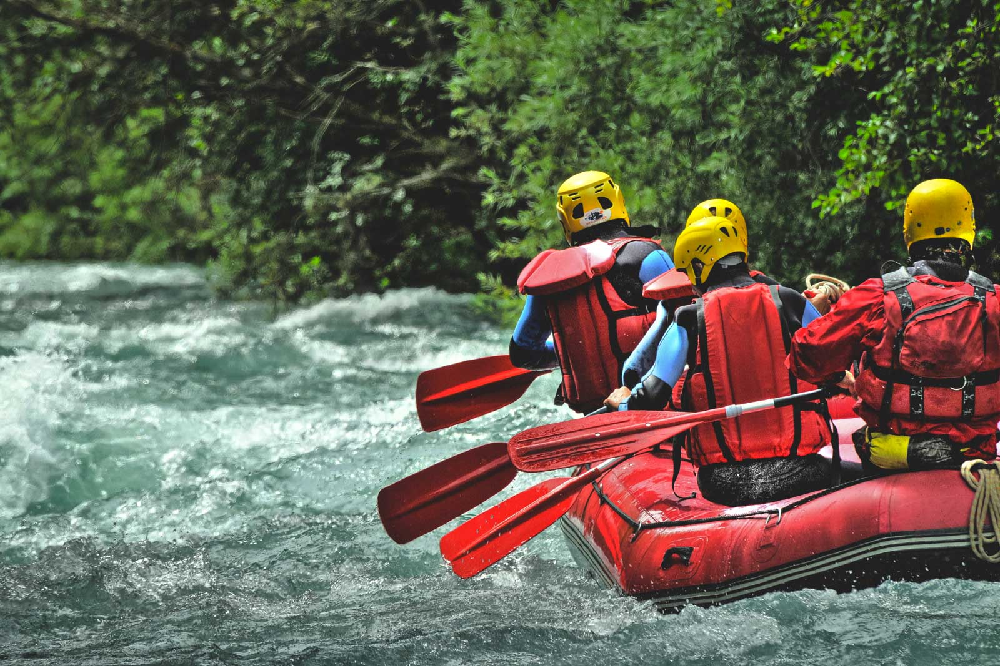
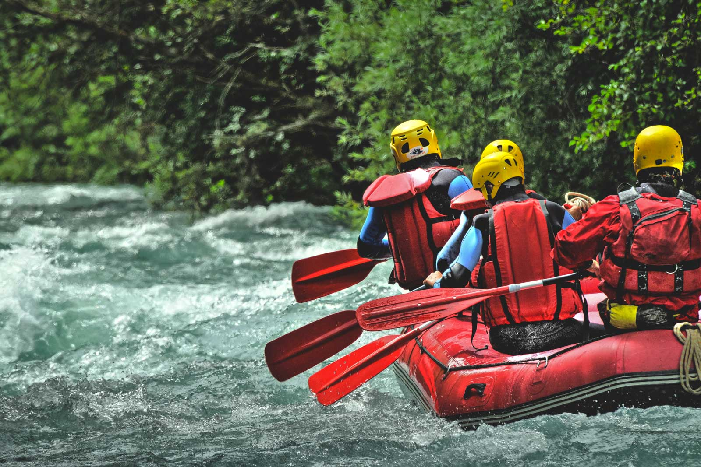

At Rafting for Life, our mission is simple yet profound: to enrich lives through the thrilling adventure of white water rafting. We believe in the transformative power of nature and adventure, and we strive to create experiences that go beyond the rush of the rapids. Our commitment is to provide not just an exhilarating ride on the water, but a journey that leaves an indelible mark on the soul. We are dedicated to crafting moments of joy, camaraderie, and personal triumph, fostering a deep connection with the great outdoors. Join us on the river, where the currents of excitement merge with the serenity of nature, creating memories that will last a lifetime. It's not just about navigating rapids; it's about navigating the spirit of adventure and discovering the extraordinary in every ripple of the river.
White Water Rafting
History
Founded in the heart of the Brazilian Atlantic Forests in 2015, Rafting for Life is more than just a company; it's a wild journey we started to share our love for the rush of the rapids. A bunch of nature lovers came together with a simple dream: to let everyone experience the thrill we found navigating these untamed rivers. From inflating rafts in a garage to navigating the exciting currents of establishing a biz, Rafting for Life grew into a hub for adventure junkies. We're not just about rapids; we're about navigating the spirit of adventure and making memories that stick. Today, we're still those river enthusiasts, inviting fellow adventurers to join us in exploring the extraordinary waters that define us. Here's to more years of wild rides and unforgettable moments!
Adventure Awaits you!

 
